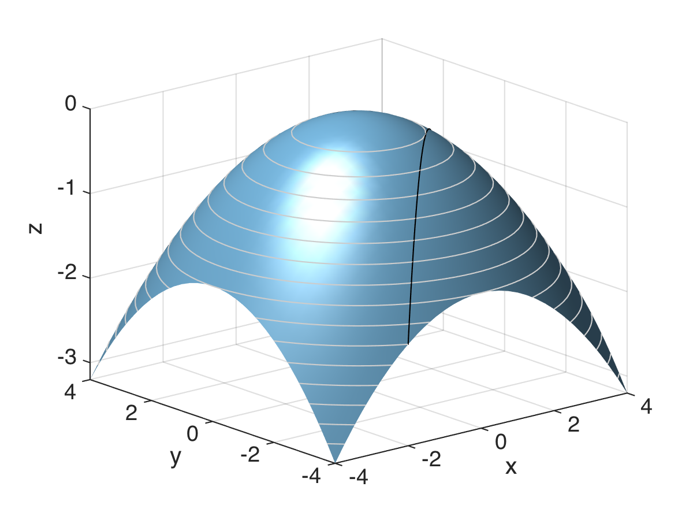

Matematik og Statistik
Dan Mønster
Denne hjemmeside indeholder online noter, materiale og opgaver til matematikdelen af faget Matematik og Statistik på 1. semester af HA og BA SOC uddannelserne på Aarhus BSS. Klik på navigationsknappen øverst til venstre (de tre vandrette streger) for at vise indholdsfortegnelsen.
